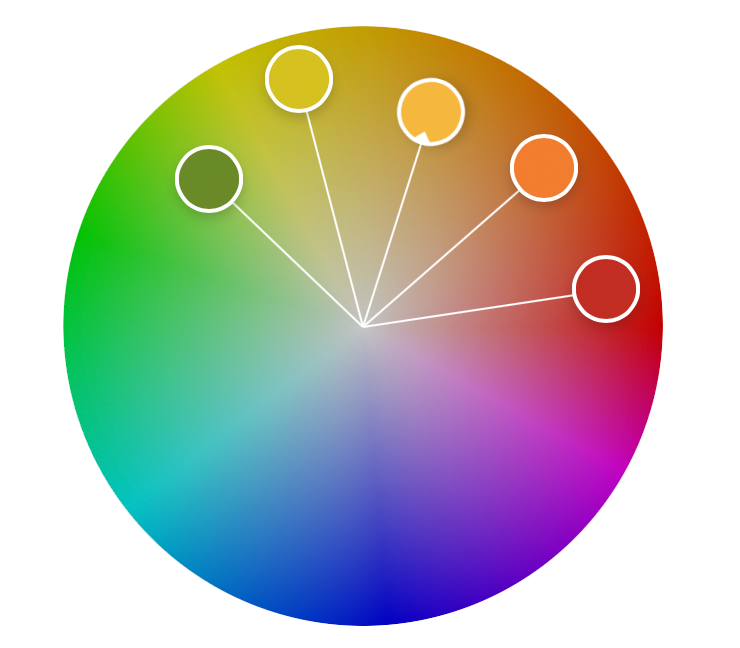

Tilbage til portfolio
Fruity Judy
Tema 2 - Grundlæggende HTML
Om projektet
I tema 2 - grundlæggende HTML har vi lært om forskellige layout-principper, som bla. grid-layout og flexbox. I min redesign opgave har jeg valgt at benytte grid-layout for at opsætte et simpelt responsivt website. Jeg valgte grid layoutet for at skabe en klar struktur og et konsistent udtryk, som følger de grundlæggende webkonventioner.
I sektion 5 (opskrifter) benyttede jeg layout-princippet flexbox, da layoutet her kun består af 3 rows og derfor er 1-dimentionelt.
Derudover har jeg benyttet mig af min tilegnet viden inden for grundlæggende typografi, i form af font-pairing samt webfonte som Roboto Slab, serif, samt Roboto, sans serif, fra bla. google fonts.

Designprocessen
I projektet responsive site, fik vi til opgave at følge en specifik wireframe som opfyldte de grundlæggende webkonventioner, derudover fik vi et benspænd som gik ud på at vi fik tildelt en stilart som vi skulle prøve at opbygge sitet udfra med vores egen ide om, hvad sitet skulle omhandle. Heraf kommer også valget med den sorte baggrund, da det udfordrer den sædvanlige norm, man ser på andre inholdsgivende sider på nettet, hvilket den brutalistiske stilart er kendt for.
Da jeg valgte at mit site skulle omhandle frugt, og alt hvad det kan bruges til, var det oplagt at benytte en farveharmoni bestående af varme toner som også ses i frugterne. Her benyttede jeg blandt andet adobe color wheel, for at finde frem til den analog farvekontrast. Hvoraf farverne er nedsat i deres styrke af brightness, hvilket også øger farvemætningen.
Splashbilledet og den brutalistiske stilart
Til splashbilledet samt de andre billeder på sitet har jeg benyttet bitmap-formatet JPG. Billederne på sitet har jeg hentet fra royaltyfree billedesider som fx. Unsplash og Colourbox, mens jeg selv har designet splashbilledet i photoshop. Splashbilledet har jeg designet ud fra den brutalistiske stilart, som er en meget psykedelisk og ekspressiv stilart, som ligger sig meget op af post modernismen og dekonstruktivismen, som i mit splashbillede kommer til udtryk med de ødelagte geometiske former, samt overlappende elementer, som skaber en form for kaos og et "broken grid".
Jeg har gennem youtube tortorials, samt w3 schools tilegnet mig viden, færdigheder og kompetencer i photoshop samt css.